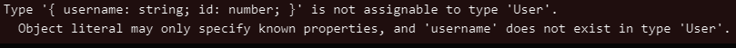
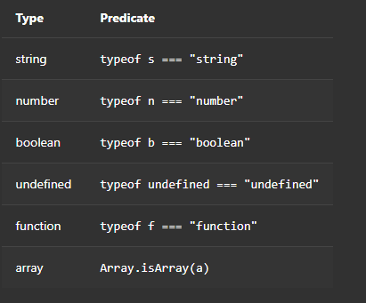
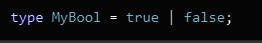
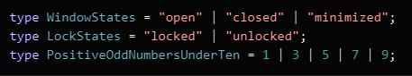
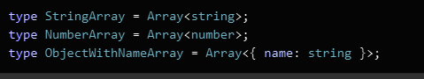
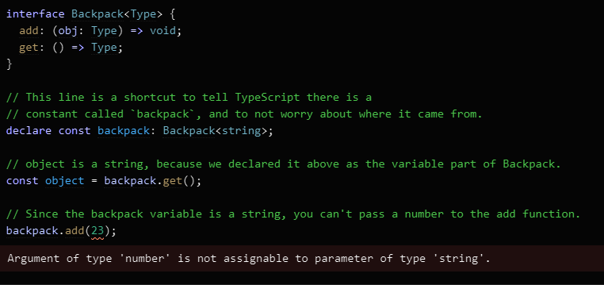
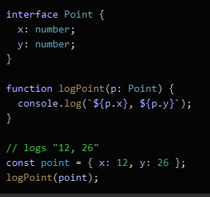

What is TypeScript and how is it different from JavaScript?
TypeScript is a superset of JavaScript which primarily provides optional static typing, classes and interfaces. TypeScript offers all of JavaScript’s features but it has an additional layer on top of these which is the TypeScript’s type system. This essentially means that unlike JavaScript which doesn't check whether or not you’ve consistently assigned these, TypeScript does.

To put it simply there is not too much of a differnece between JavaScript and TypeScript the only real difference is that in TypeScript when you instantiate a variable you have to delcare its type when you do so, no JavaScript you don't have to delare the type.
How to define Types
You can use a wide variety of design patterns in JavaScript. However, some design patterns make it difficult for types to be inferred automatically (for example, patterns that use dynamic programming). To cover these cases, TypeScript supports an extension of the JavaScript language, which offers places for you to tell TypeScript what the types should be.
For example, to create an object with an inferred type which includes name: string and id: number, you can write:
const user = { name: "Joe", id: 0, };
You can explicitly describe this object’s shape using an interface declaration:
interface User = { name: string;; id: number; }
You can then declare that a JavaScript object conforms to the shape of your new interface by using syntax like : TypeName after a variable declaration:
const user: User = { name: "Joe", id: 0, };
If you provide an object that doesn’t match the interface you have provided, TypeScript will warn you: 
Since JavaScript supports classes and object-oriented programming, so does TypeScript. You can use an interface declaration with classes:
interface User { name: string; id: number; } class UserAccount { name: string name: string constructor(name: string, id: number) { this.name = name; this.id = id; } } const user: User = new UserAccount("Murphy", 1);
You can use interfaces to annotate parameters and return values to functions:
function getAdminUser(): User { //... }
function deleteUser (user: User) { //... }
There is already a small set of primitive types available in JavaScript: boolean, bigint, null, number, string, symbol, and undefined, which you can use in an interface. TypeScript adds a few more to this list: - 'any' allows anything - 'unknown' ensures someone using this type declares what the type is - 'never' makes it not possible that this type could happen - 'void' a function which returns undefined or has no return value
The different Types
You can use a wide variety of design patterns in JavaScript. However, some design patterns make it difficult for types to be inferred automatically (for example, patterns that use dynamic programming). To cover these cases, TypeScript supports an extension of the JavaScript language, which offers places for you to tell TypeScript what the types should be.
To learn the type of a variable, use typeof:
Creating complex Types by combining
With TypeScript, you can create complex types by combining simple ones. There are two popular ways to do so: with unions, and with generics. Unions: You can declare that a type could be one of many types. For example, you can describe a boolean type as being either true or false:
A popular use-case for union types is to describe the set of string or number literals that a value is allowed to be:
Using generics with Types
Generics provide variables to types. A common example is an array. An array without generics could contain anything. An array with generics can describe the values that the array contains.
You can declare your own types that use generics:
The Structural Type System
One of TypeScript’s core principles is that type checking focuses on the shape that values have. This is sometimes called “duck typing” or “structural typing”. In a structural type system, if two objects have the same shape, they are considered to be of the same type.
The point variable is never declared to be a Point type. However, TypeScript compares the shape of point to the shape of Point in the type-check. They have the same shape, so the code passes.